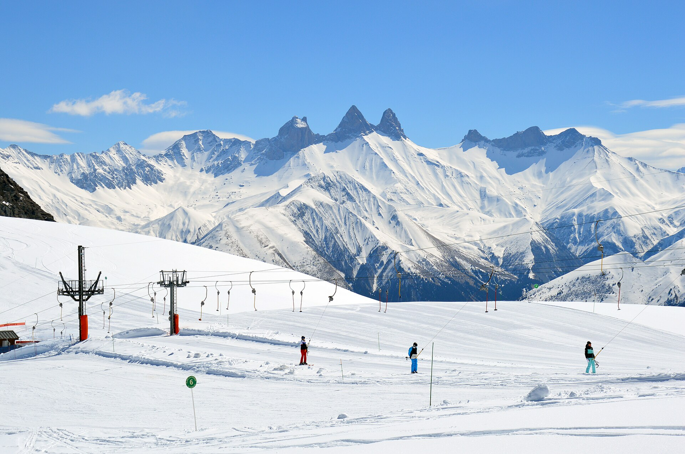

While the packages are on sale
Filming
Short promos in Cluj before you leave: people asking each other "are you coming?", the line-up reveal, the countdown to the last places.
Goes out
Reels for the last weeks of sales, when people are still deciding between Les 2 Alpes and Val Thorens.